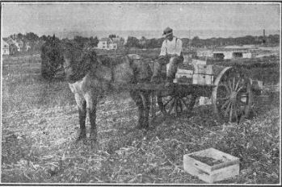

223. Harvesting
Description
This section is from the book "Vegetable Gardening", by Ralph L. Watts. Also available from Amazon: Vegetable Gardening.
223. Harvesting
Some classes of vegetables, as sweet potatoes, are harvested at one time; that is, the entire crop on a given area is removed the same day, perhaps, and the ground is then available for something else. Other crops, as tomatoes, are not all ripe at one time and several or many pickings are required. Again, some vegetables, as melons, must be harvested and marketed as soon as they are ripe or mature; while others, as beets, may be left in the field for days or even weeks until market conditions become favorable, or until it is convenient to gather the crop.
When harvesting garden crops, consideration should be given as far as possible to soil and weather conditions. Heavy soils are seriously injured if tramped or disturbed when wet. This difficulty, however, is often unavoidable. It may be much better, and certainly it is more comfortable, to harvest crops in pleasant weather. Thousands of gardeners, however, go to market every day during the summer and the produce must be gathered regularly without regard to the character of the weather.
Promptness
Promptness is of the greatest importance in harvesting the most perishable crops. A day's delay may result in heavy losses, especially in hot, sultry weather and in seasons when destructive frosts or freezes are likely to occur.
The organization of the field force of men demands careful study. It is imperative to have an alert, tactful foreman who is thoroughly familiar with every detail of harvesting and well qualified to direct men. It is usually possible to assign each laborer to one or two rows, and thus simplify the work of the foreman and place definite responsibility upon each person. If baskets are used, an ample supply should be kept close at hand, and when the force is large it may pay to have a boy look after this matter. He should see that an empty basket is within the reach of each picker the moment it is needed. Special roadways are necessary in collecting crops all of which are not harvested at one time. In some cases planting distances can be adjusted to make it possible for the wheels of the wagons to straddle a certain number of rows. With other crops the earliest maturing varieties may be planted on the strips wanted for roads. This ground will be almost if not entirely free when the later varieties are ready to harvest.
A great many different methods are used in collecting the crop. A bulky crop, such as cabbage, is often placed on the wagons immediately after cutting and hauled to market without further attention, while many crops, including cabbage, are frequently packed in the field in barrels or crates and then hauled to market or to the shipping station. Various types of two-wheel carts are in common use in collecting crops. Hundreds of them are employed by Norfolk truckers. In the Boston district the cart shown in Figure 44 is a popular type. At least 30 bushel boxes may be stacked on the large platform, and the broad tires will prevent the wheels from sinking very far into soft ground. Low platform wagons with broad tires are especially desirable. Wheelbarrows provided with large boxes are frequently used in small plantations. The picking basket should be well made and provided with strong drop handles, so that the baskets will nest snugly. Every possible effort should be made to prevent bruising the vegetables.
Fig. 44. cast used near boston for collecting vegetables.
Continue to:
Tags
plants, crops, gardening, cultivated, harvesting, food ,greenhouses, fertiliser, vegitables